Image track
CNN vs ViT on Stanford Dogs.
This page contains the full image report for Assignment 1, including the required five report categories and the completed extension work.
Image track
This page contains the full image report for Assignment 1, including the required five report categories and the completed extension work.
Read the image report in the same order as the transfer-learning workflow. Each pipeline node activates one major content block below.
Pipeline-first reading mode
This page still contains the full five-part image report, but the navigation is now organized by Input → Preprocessing → Backbone → Head → Output. That makes the report easier to follow for readers who want to understand the full transfer-learning process rather than jump between disconnected sections.
Current stage
This stage corresponds to the raw input image x. It focuses on Stanford Dogs as a dataset, the official split reconstruction, metadata building, and EDA findings such as class balance, image size, and illumination variation.
This stage stays on the raw input side of the workflow: Stanford Dogs images before preprocessing, the exported metadata files reconstructed by the notebook, and the EDA evidence that later justifies resizing, normalization, and augmentation.
Problem statement
The goal is to classify each image into one of 120 dog breeds and compare two major model families under the same dataset and evaluation protocol.
Dataset summary
metadata_with_quality.csv and split_metadata.csvStanford Dogs is a fine-grained benchmark with enough classes and enough training samples to make the CNN-versus-Transformer comparison meaningful and non-trivial.
Raw input context
For this report, node x stays focused on the raw Stanford Dogs input and the metadata analysis done
before transform design. The notebook reconstructs the official split, exports per-image metadata, enriches it with
brightness and color statistics, and only then moves on to tensor conversion in node 2.
train_list.mat and test_list.mat to reconstruct the official Stanford Dogs splitbuild_metadata(...) exports path, label, class name, width, height, aspect ratio, and split labels for each samplemetadata_with_quality.csv with brightness_mean, contrast_std, saturation_mean, r_mean, g_mean, and b_meansplit_metadata.csv records the internal stratified split: 10,200 train, 1,800 val, and 8,580 test(3, 224, 224) per image, but the actual resize-to-tensor logic is intentionally deferred to node 2Official split files
train_list.mat and test_list.mat actually are
These two files are not image folders. They are MATLAB annotation files shipped with Stanford Dogs and used to
define the original benchmark partition. Each file stores sample-level metadata such as relative image paths and
integer breed labels, so the notebook can recover the official train/test split instead
of inventing a new one from scratch.
train_list.mat: official training-image entries and labelstest_list.mat: official test-image entries and labelsImages/train and val split from official_trainDataset layout
The notebook downloads three archives: image files, breed annotations, and the official split lists. In practice,
the code resolves TRAIN_LIST_MAT and TEST_LIST_MAT either from the dataset root or from
the extracted lists/ folder.
stanford_dogs/
├── images.tar
├── annotation.tar
├── lists.tar
├── Images/
│ ├── n02085620-Chihuahua/
│ │ ├── n02085620_10074.jpg
│ │ └── ...
│ ├── n02085782-Japanese_spaniel/
│ └── ...
├── Annotation/
│ ├── n02085620-Chihuahua/
│ │ ├── n02085620_10074
│ │ └── ...
│ └── ...
├── lists/
│ ├── train_list.mat
│ └── test_list.mat
├── train_list.mat # sometimes resolved from the root
└── test_list.mat # sometimes resolved from the roottrain_meta_full = build_metadata(train_rel_paths, train_labels, "official_train")
test_meta = build_metadata(test_rel_paths, test_labels, "official_test")
meta = pd.concat([train_meta_full, test_meta], ignore_index=True)
splitter = StratifiedShuffleSplit(
n_splits=1,
test_size=VAL_FROM_TRAIN_RATIO,
random_state=SEED,
)
train_idx, val_idx = next(splitter.split(train_meta_full, train_meta_full["label"]))quality_rows = []
for image_path in tqdm(meta["image_path"], desc="Computing image-quality metadata"):
with Image.open(image_path).convert("RGB") as image:
rgb_arr = np.asarray(image, dtype=np.float32) / 255.0
gray_arr = np.asarray(image.convert("L"), dtype=np.float32) / 255.0
hsv_arr = rgb_to_hsv(rgb_arr)
quality_rows.append({
"brightness_mean": float(gray_arr.mean()),
"contrast_std": float(gray_arr.std()),
"saturation_mean": float(hsv_arr[..., 1].mean()),
"r_mean": float(rgb_arr[..., 0].mean()),
"g_mean": float(rgb_arr[..., 1].mean()),
"b_mean": float(rgb_arr[..., 2].mean()),
})
quality_df = pd.DataFrame(quality_rows)
meta = pd.concat([meta.reset_index(drop=True), quality_df], axis=1)
meta.to_csv(EDA_ARTIFACT_ROOT / "metadata_with_quality.csv", index=False)
Artifact references used in this panel come directly from the notebook export: metadata_with_quality.csv,
split_metadata.csv, quality_distributions.png, dataset_distributions.png,
image_size_distribution.png, rgb_channel_summary.png, random_class_samples.png,
darkest_examples.png, and brightest_examples.png.
CSV artifacts
Artifact 1
metadata_with_quality.csvThis is the master per-image metadata table for the whole Stanford Dogs dataset. It starts from the reconstructed official split, then appends geometry and image-quality statistics so the EDA can be reproduced from a single CSV.
image_id, class_name, and official_splitwidth, height, and aspect_ratiobrightness_mean, contrast_std, saturation_mean, r_mean, g_mean, and b_mean
Web source: metadata_with_quality.csv
Artifact 2
split_metadata.csv
This is the split-assignment table used after the internal stratified split. It keeps the same image identity and
geometry fields, but its extra job is to mark whether each sample belongs to the final train,
val, or test partition used by the loaders.
official_split so the original Stanford Dogs partition is still traceablesplit column used by build_loaders(...)
Web source: split_metadata.csv
Preview of metadata_with_quality.csv |
||||||||
|---|---|---|---|---|---|---|---|---|
| image_id | class_name | official_split | width | height | aspect_ratio | brightness_mean | contrast_std | saturation_mean |
n02085620_5927 |
Chihuahua | official_train |
360 | 300 | 1.200 | 0.348 | 0.221 | 0.445 |
n02085620_4441 |
Chihuahua | official_train |
375 | 500 | 0.750 | 0.538 | 0.099 | 0.223 |
n02085620_1502 |
Chihuahua | official_train |
500 | 333 | 1.502 | 0.543 | 0.215 | 0.267 |
Preview of split_metadata.csv |
||||||
|---|---|---|---|---|---|---|
| image_id | class_name | official_split | split | width | height | aspect_ratio |
n02107142_4013 |
Doberman | official_train |
train |
236 | 350 | 0.674 |
n02091244_5818 |
Ibizan hound | official_train |
train |
375 | 500 | 0.750 |
n02107574_2912 |
Greater Swiss Mountain dog | official_train |
train |
500 | 334 | 1.497 |
Final split counts from split_metadata.csv |
|
|---|---|
| split | count |
train |
10,200 |
val |
1,800 |
test |
8,580 |
EDA highlights
The exported EDA confirms that Stanford Dogs is visually diverse in brightness, contrast, saturation, image size, aspect ratio, and scene composition. The notebook artifacts also show that the class distribution is only moderately imbalanced, which makes a stratified train/validation split practical without distorting the benchmark too much.
metadata_with_quality.csv: brightness mean 0.4522, contrast std mean 0.2261, saturation mean 0.3047metadata_with_quality.csv: RGB means are R = 0.4761, G = 0.4518, B = 0.3910metadata_with_quality.csv: average width 442.5 px, average height 385.9 px, average aspect ratio 1.19metadata_with_quality.csv: breed counts range from 148 to 252 images, with a mean of 171.5split_metadata.csv: internal split is 10,200 train / 1,800 val / 8,580 test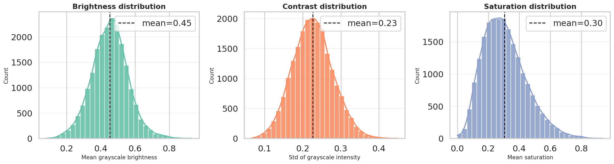
Brightness, contrast, and saturation distributions confirm a broad range of lighting and color conditions.
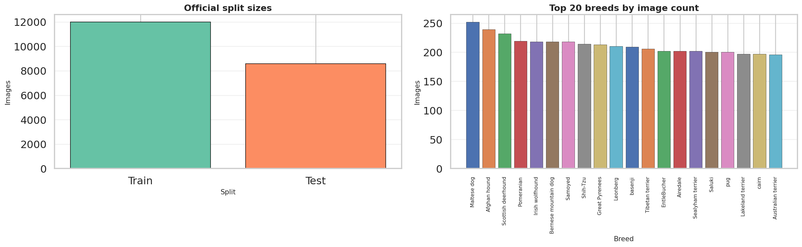
The split and breed-distribution export shows a healthy sample count for both official partitions, while the breed histogram remains only moderately imbalanced.

Width, height, and aspect-ratio distributions show that the dataset contains varied image geometries before resizing to the common model input size.
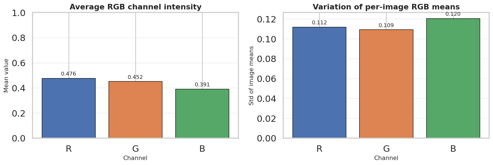
The RGB summary complements the quality CSV by showing that the dataset is not perfectly color-balanced, which helps justify later channel-wise normalization.
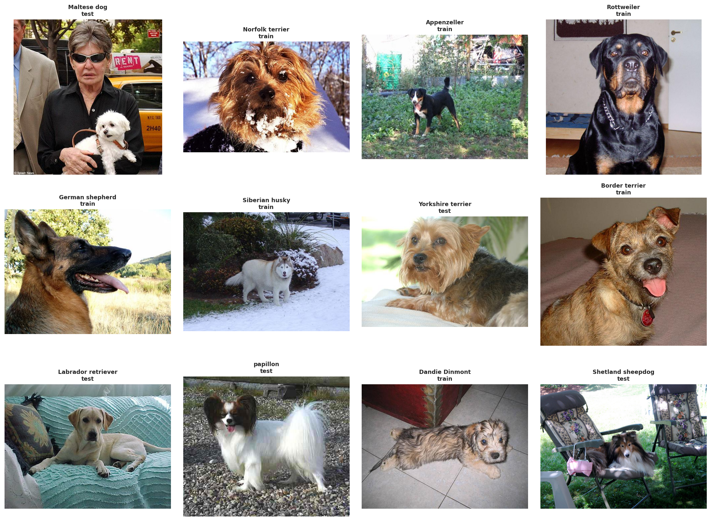
Random breed samples visualize the raw input domain before any preprocessing: different poses, backgrounds, framing, and lighting conditions appear immediately.
Extreme brightness examples
To complement the summary statistics, we also inspected the darkest and brightest images in the dataset. This helps verify that the measured brightness range corresponds to meaningful visual variation rather than only small numerical differences.
The darkest examples are mostly low-light indoor images, shadow-heavy scenes, or photos with strong exposure limitations. In several cases, the dog occupies only part of the frame or blends into a dark background, which makes recognition harder even for humans. These samples motivate brightness-robust preprocessing and moderate augmentation.
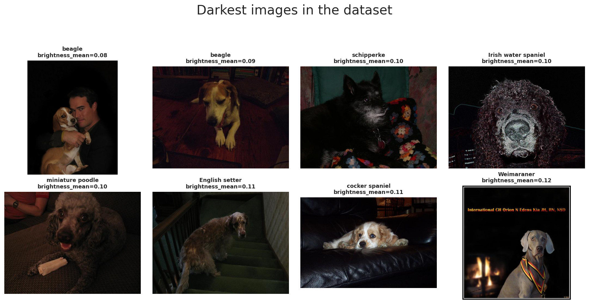
The darkest images in Stanford Dogs illustrate low-light scenes, dark backgrounds, and reduced visibility of breed-specific features.
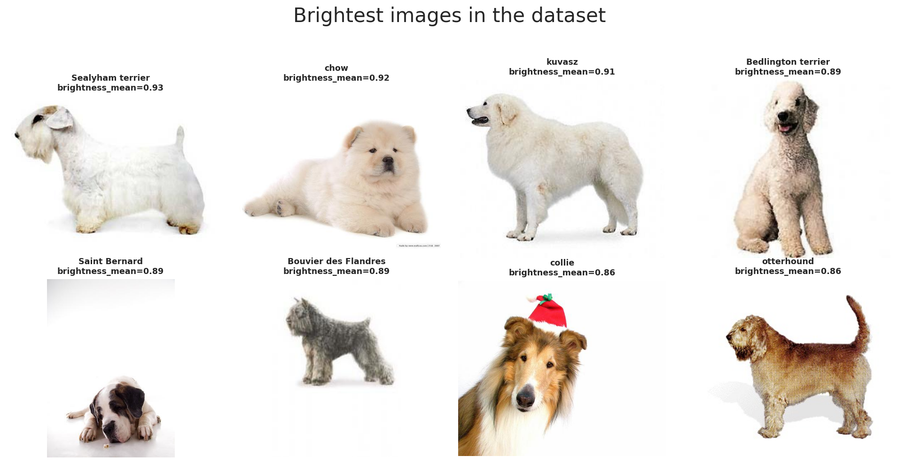
The brightest images often contain white backgrounds or bright fur, showing the opposite end of the illumination range.
Together, these two galleries confirm that Stanford Dogs includes substantial illumination diversity. This is the last stop of the report before node 2 begins the actual data processing pipeline that standardizes geometry and channel scaling.
This stage expands T(x) into the actual data-processing workflow used by the notebook: resizing, model-specific augmentation, normalization, and the Dataset/DataLoader handoff that produces fair 224x224 mini-batches for both ResNet-50 and ViT-B/16.
Preprocessing pipeline overview
(N, C, H, W)The preprocessing pipeline has three core objectives: make image sizes consistent, create useful training variation through augmentation, and normalize tensors so pretrained models receive inputs in a familiar scale.
In this notebook, the exported W&B run summary shows the same input contract for all four benchmark runs:
image_size = 224 and batch_size = 32. That shared contract is what keeps the later
ResNet-50 versus ViT-B/16 comparison fair at the data-processing level.
The standard evaluation flow is Resize((256, 256)) → CenterCrop(224) →
ToTensor(). This ensures that all images can be stacked into one batch tensor even though the
original Stanford Dogs images have different sizes and aspect ratios.
The final tensor shape per image is (3, 224, 224), and with the benchmark setting
BATCH_SIZE = 32 a typical mini-batch becomes (32, 3, 224, 224).
In PyTorch, image batches are stored in channel-first format (N, C, H, W), where
N is batch size, C is channel count, H is height, and
W is width.
This layout is the standardized input representation that both backbones receive after preprocessing finishes.
The notebook standardizes geometry before normalization: first resize, then crop, then convert to tensor, and finally normalize. This order is important because normalization should be applied after the pixel data is already in tensor form.
The same deterministic evaluation path is reused for validation and test so the reported metrics stay stable.
After preprocessing is defined, the Dataset and DataLoader wrap these per-image transforms into mini-batches.
The notebook uses BATCH_SIZE = 32, which is the same value recorded for every benchmark run in
wandb_export/runs_summary.csv.
The notebook output prints ResNet loaders: 319 57 269 and ViT loaders: 319 57 269,
corresponding to train, validation, and test batches under the shared split.
Overall objective: convert raw Stanford Dogs images into a fixed tensor representation that supports batching, augmentation, and a fair four-run benchmark.
Artifact references used in this panel come from notebook outputs plus exports in wandb_export,
especially runs_summary.csv and augmented_batch_preview.png.
Data augmentation
These three operations make the CNN branch see the same breed under slightly different framing and orientation.
RandomResizedCrop(scale=(0.72, 1.0)) changes how tightly the dog is framed, horizontal flip adds
left-right variation, and RandomRotation(15) makes the model less sensitive to small camera tilt.
This is especially useful for dog photos because pose, camera angle, and subject placement vary a lot in the dataset.
ColorJitter(brightness=0.15, contrast=0.15, saturation=0.15) simulates lighting variation, while
Normalize(IMAGENET_MEAN, IMAGENET_STD) aligns the input distribution with ImageNet-pretrained weights.
RandomErasing(p=0.10) acts like a mild occlusion simulation: part of the image is masked so the model
learns not to depend on only one local patch such as one ear, one eye, or a small fur texture region.
Validation and test preprocessing is deterministic. We do not use random augmentation there because evaluation should measure the model itself, not randomness from the input pipeline.
Resize + CenterCrop + ToTensor + Normalize creates a stable and repeatable input path for every evaluation run.
The ResNet-50 branch uses the stronger augmentation policy, but it is still moderate enough to preserve breed identity for a fine-grained dataset.
Train vs validation
The ViT training pipeline still uses crop and flip, but the crop range is narrower:
RandomResizedCrop(scale=(0.78, 1.0)). This means the model sees less aggressive spatial distortion than
the ResNet setup.
The reason is practical: Stanford Dogs is a fine-grained task, so overly strong augmentation can destroy subtle breed cues such as ear shape, muzzle geometry, or fur structure that the Transformer needs to separate similar classes.
Just like ResNet, ViT uses ImageNet normalization so the pretrained backbone receives inputs in a familiar scale.
The erasing step is also milder at p=0.08, because the augmentation policy is intentionally less aggressive overall.
In other words, the ViT pipeline still regularizes training, but it does so with more restraint to avoid hurting fine-grained recognition.
The evaluation transform is shared with the CNN setup. This is important because model comparison is more meaningful when both backbones are tested under the same deterministic input pipeline.
Using the same validation/test preprocessing ensures that any performance gap is mainly due to the model family and training strategy, not different evaluation transforms.
The ViT notebook keeps augmentation lighter so that fine-grained breed cues are preserved while still improving generalization.
Data normalization
Normalization is the step that rescales each RGB channel so optimization becomes more stable and inputs better match the distribution used during model pretraining. In this notebook, both backbones use ImageNet statistics, even though the exported Stanford Dogs quality CSV shows slightly different dataset-specific RGB means.
Normalization goals
Reference notes
# normalization formula
# x_norm = (x - mean) / std
IMAGENET_MEAN = (0.485, 0.456, 0.406)
IMAGENET_STD = (0.229, 0.224, 0.225)
normalize = transforms.Normalize(IMAGENET_MEAN, IMAGENET_STD)metadata_with_quality.csv reports dataset RGB means of approximately (0.4761, 0.4518, 0.3910).# reference pattern for custom mean/std estimation
channel_sum = torch.zeros(3)
channel_sq_sum = torch.zeros(3)
pixel_count = 0
for images, _ in train_loader:
channel_sum += images.sum(dim=(0, 2, 3))
channel_sq_sum += (images ** 2).sum(dim=(0, 2, 3))
pixel_count += images.size(0) * images.size(2) * images.size(3)
mean = channel_sum / pixel_count
std = (channel_sq_sum / pixel_count - mean ** 2).sqrt()Complete augmentation pipeline
Shared evaluation transform
Resize((256, 256))CenterCrop(224)ToTensor()Normalize(IMAGENET_MEAN, IMAGENET_STD)ResNet-50 train transform
Resize((256, 256))RandomResizedCrop(224, scale=(0.72, 1.0))RandomHorizontalFlip(0.5)RandomRotation(15)ColorJitter(brightness=0.15, contrast=0.15, saturation=0.15)RandomErasing(p=0.10) after normalizationViT-B/16 train transform
Resize((256, 256))RandomResizedCrop(224, scale=(0.78, 1.0))RandomHorizontalFlip(0.5)ColorJitter(brightness=0.10, contrast=0.10, saturation=0.10)RandomErasing(p=0.08) after normalizationresnet_train_transform = transforms.Compose([
transforms.Resize((256, 256)),
transforms.RandomResizedCrop(IMAGE_SIZE, scale=(0.72, 1.0)),
transforms.RandomHorizontalFlip(0.5),
transforms.RandomRotation(15),
transforms.ColorJitter(brightness=0.15, contrast=0.15, saturation=0.15),
transforms.ToTensor(),
transforms.Normalize(IMAGENET_MEAN, IMAGENET_STD),
transforms.RandomErasing(p=0.10),
])
vit_train_transform = transforms.Compose([
transforms.Resize((256, 256)),
transforms.RandomResizedCrop(IMAGE_SIZE, scale=(0.78, 1.0)),
transforms.RandomHorizontalFlip(0.5),
transforms.ColorJitter(brightness=0.10, contrast=0.10, saturation=0.10),
transforms.ToTensor(),
transforms.Normalize(IMAGENET_MEAN, IMAGENET_STD),
transforms.RandomErasing(p=0.08),
])
common_eval_transform = transforms.Compose([
transforms.Resize((256, 256)),
transforms.CenterCrop(IMAGE_SIZE),
transforms.ToTensor(),
transforms.Normalize(IMAGENET_MEAN, IMAGENET_STD),
])Important note: augmentation belongs only to the training path. Validation and test remain deterministic so evaluation measures the model rather than randomness from the preprocessing pipeline.
Custom dataset and best practices
After resize, augmentation, and normalization are defined, the notebook wraps the metadata frame in a custom
Dataset. Each image is loaded lazily from disk, converted to RGB, transformed on the fly,
and then batched by the DataLoader. This is where raw image files finally become consistent mini-batches
for both model families.
BATCH_SIZE = 32NUM_WORKERS = 0 on Windows, otherwise 4PIN_MEMORY = torch.cuda.is_available()PERSISTENT_WORKERS = NUM_WORKERS > 0drop_last is left at the PyTorch default Falseshuffle=True; validation and test use shuffle=Falseclass StanfordDogsFrameDataset(Dataset):
def __init__(self, frame: pd.DataFrame, transform=None):
self.frame = frame.reset_index(drop=True).copy()
self.transform = transform
def __len__(self):
return len(self.frame)
def __getitem__(self, idx):
row = self.frame.iloc[idx]
image = Image.open(row["image_path"]).convert("RGB")
label = int(row["label"])
if self.transform is not None:
image = self.transform(image)
return image, label# complete loader example
def build_loaders(train_transform):
train_ds = StanfordDogsFrameDataset(train_meta, transform=train_transform)
val_ds = StanfordDogsFrameDataset(val_meta, transform=common_eval_transform)
test_ds = StanfordDogsFrameDataset(test_meta, transform=common_eval_transform)
train_loader = DataLoader(train_ds, batch_size=BATCH_SIZE, shuffle=True, num_workers=NUM_WORKERS, pin_memory=PIN_MEMORY, persistent_workers=PERSISTENT_WORKERS)
val_loader = DataLoader(val_ds, batch_size=BATCH_SIZE, shuffle=False, num_workers=NUM_WORKERS, pin_memory=PIN_MEMORY, persistent_workers=PERSISTENT_WORKERS)
test_loader = DataLoader(test_ds, batch_size=BATCH_SIZE, shuffle=False, num_workers=NUM_WORKERS, pin_memory=PIN_MEMORY, persistent_workers=PERSISTENT_WORKERS)
return train_loader, val_loader, test_loader
resnet_train_loader, resnet_val_loader, resnet_test_loader = build_loaders(resnet_train_transform)
vit_train_loader, vit_val_loader, vit_test_loader = build_loaders(vit_train_transform)
print("ResNet loaders:", len(resnet_train_loader), len(resnet_val_loader), len(resnet_test_loader))
print("ViT loaders:", len(vit_train_loader), len(vit_val_loader), len(vit_test_loader))
# ResNet loaders: 319 57 269
# ViT loaders: 319 57 269batch_size, num_workers, and pin_memory based on hardware.runs_summary.csv shows all four benchmark runs keep the same input size of 224 and batch size of 32.
The two artifact references mentioned earlier are now surfaced directly here. The W&B export file
runs_summary.csv
confirms that every benchmark run keeps the same preprocessing contract, while the notebook image artifact
augmented_batch_preview.png shows what the transformed training batch actually looks like.
Preview of runs_summary.csv for node 2 data-processing settings |
||||
|---|---|---|---|---|
| model_name | family | strategy | batch_size | image_size |
| ResNet-50 | cnn |
Full fine-tuning for 12 epochs | 32 | 224 |
| ResNet-50 | cnn |
Head 3 + full fine-tune 8 epochs | 32 | 224 |
| ViT-B/16 | vit |
Full fine-tuning for 12 epochs | 32 | 224 |
| ViT-B/16 | vit |
Head 3 + full fine-tune 8 epochs | 32 | 224 |
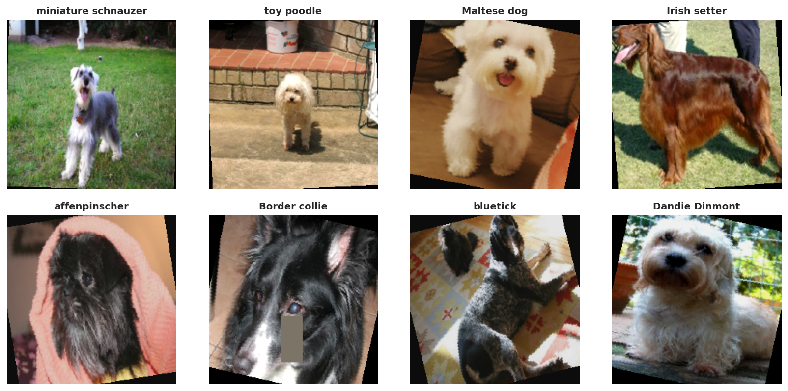
The exported notebook artifact augmented_batch_preview.png confirms that the training transform is active,
but still preserves the main breed identity after resize, crop, normalization, and augmentation.
This stage focuses on z, the learned feature representation produced by the pretrained backbone. It explains how ResNet-50 and ViT-B/16 process the shared 224x224 tensors, how transfer learning is configured for each backbone, and how the fair four-run benchmark is grounded in the exported artifacts.
Backbone overview
After node 1 and node 2 finish data processing, both model families receive the same minibatch format and then diverge internally. ResNet-50 keeps a convolutional feature grid all the way to global pooling, while ViT-B/16 turns the image into a sequence of patch tokens and summarizes it through the CLS token.
(32, 3, 224, 224)runs_summary.csv agree on the shared preprocessing contract:
batch_size = 32 and image_size = 224 for all four benchmark runs.
(N, 2048, 7, 7) before
global average pooling reduces them to (N, 2048). The classifier head later reads that pooled
descriptor.
14 x 14 = 196 patch tokens.
With one extra class token, the transformer processes a sequence of 197 tokens and learns a
feature representation with hidden size 768. The final class token embedding is then passed to
the classification head.
model_comparison.csv, runs_summary.csv, and the staged-run history files.
# Conceptual shape flow used in this report
images, labels = next(iter(resnet_train_loader))
# images.shape -> torch.Size([32, 3, 224, 224])
# ResNet-50
# backbone feature maps: (32, 2048, 7, 7)
# pooled features: (32, 2048)
# logits after fc: (32, 120)
# ViT-B/16
# 224x224 with patch size 16 -> 14 x 14 = 196 patches
# token sequence: (32, 197, 768) # 196 patches + 1 cls token
# cls embedding: (32, 768)
# logits after head: (32, 120)
Backbone evidence files used in this section:
model_comparison.csv,
runs_summary.csv,
resnet50_staged_history.csv,
and
vit_b16_staged_history.csv.
CNN backbone
The CNN branch of the refactored notebook uses ResNet-50 as the benchmark CNN backbone. That gives the report a deeper convolutional baseline with a 2048-dimensional pooled representation before the final classifier.
create_resnet50(...) keeps the pretrained backbone and swaps only the classifiermodel.fc so the output width matches 120 Stanford Dogs classes.
model_comparison.csv is 23,753,9120.8655 test accuracy versus 0.8557 for full fine-tuning,
and it also finishes a bit faster (205.0s versus 227.1s).
def create_resnet50(num_classes: int) -> nn.Module:
model = models.resnet50(weights=models.ResNet50_Weights.IMAGENET1K_V2)
model.fc = nn.Linear(model.fc.in_features, num_classes)
return model
resnet_model = create_resnet50(NUM_CLASSES).to(DEVICE)
print("ResNet-50 params:", f"{count_total_params(resnet_model):,}")Artifact-backed backbone summary: ResNet-50 is the 23.75M-parameter CNN baseline used in both the full and staged schedules of the fair benchmark.
Transformer backbone
The transformer branch keeps ViT-B/16 with ImageNet-pretrained weights. Its backbone remains much heavier than ResNet-50, but the exported history files show that its pretrained representation is already extremely strong before full fine-tuning even starts.
create_vit_b16(...) replaces the classification head on top of the CLS embeddingmodel.heads.head. The notebook swaps that linear
layer while leaving the rest of the transformer stack intact.
85,890,936vit_b16_staged_history.csv, the head-only phase moves from 0.9456 to
0.9522 validation accuracy within just three epochs, showing how strong the pretrained backbone is
before the full-model stage.
def create_vit_b16(num_classes: int) -> nn.Module:
model = models.vit_b_16(weights=models.ViT_B_16_Weights.IMAGENET1K_V1)
model.heads.head = nn.Linear(model.heads.head.in_features, num_classes)
return model
vit_model = create_vit_b16(NUM_CLASSES).to(DEVICE)
print("ViT-B/16 params:", f"{count_total_params(vit_model):,}")Artifact-backed backbone summary: ViT-B/16 is the 85.89M-parameter transformer baseline, and its staged schedule reaches the best test accuracy in the current fair benchmark.
Transfer learning
This is the biggest change from the old report. Instead of giving the CNN and ViT different main strategies, the current notebook evaluates both under full fine-tuning for 12 epochs and head 3 + full fine-tune 8 epochs. That makes the backbone comparison much cleaner.
def set_trainable_stage(model: nn.Module, family: str, mode: str):
if mode == 'head_only':
for param in model.parameters():
param.requires_grad = False
if family == 'cnn':
for param in model.fc.parameters():
param.requires_grad = True
elif family == 'vit':
for param in model.heads.parameters():
param.requires_grad = True
elif mode == 'full_finetune':
for param in model.parameters():
param.requires_grad = True| Model | Family | Strategy | Params(M) | Test accuracy | Macro F1 | Train time (s) |
|---|---|---|---|---|---|---|
| ResNet-50 | CNN | Full fine-tuning for 12 epochs | 23.75 | 0.8557 | 0.8485 | 227.1 |
| ResNet-50 | CNN | Head 3 + full fine-tune 8 epochs | 23.75 | 0.8655 | 0.8599 | 205.0 |
| ViT-B/16 | Transformer | Full fine-tuning for 12 epochs | 85.89 | 0.9077 | 0.9026 | 943.4 |
| ViT-B/16 | Transformer | Head 3 + full fine-tune 8 epochs | 85.89 | 0.9348 | 0.9311 | 755.2 |
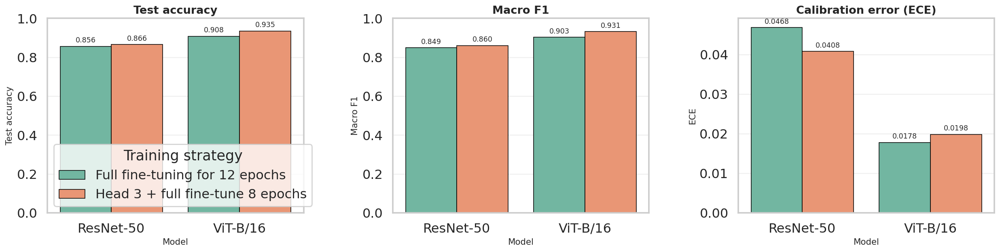
The downloaded comparison_overview.png is the report-ready benchmark figure generated after the fair
four-run experiment. It visually confirms the same ranking shown in model_comparison.csv:
staged ViT-B/16 first, then full ViT-B/16, then staged ResNet-50, and finally full ResNet-50.
Direct web references for this node:
model_comparison.csv,
best_per_family_comparison.csv,
comparison_overview.png,
resnet50_staged_run_metadata.json,
and
vit_b16_staged_run_metadata.json.
Artifact snapshots
The notebook and W&B exports do not just provide final metrics. They also record the run contract, staged history, and best-per-family summary used to justify the backbone comparison. The tables below are compact previews of those files so the reader does not need to open raw CSV or JSON first.
Preview of runs_summary.csv |
||||||
|---|---|---|---|---|---|---|
| Run ID | Model | Family | Strategy | Batch size | Image size | Total params |
4vbmbqdj |
ResNet-50 | cnn |
Full fine-tuning for 12 epochs | 32 | 224 | 23,753,912 |
82qpkftg |
ResNet-50 | cnn |
Head 3 + full fine-tune 8 epochs | 32 | 224 | 23,753,912 |
qt797v8c |
ViT-B/16 | vit |
Full fine-tuning for 12 epochs | 32 | 224 | 85,890,936 |
kqlnnxbe |
ViT-B/16 | vit |
Head 3 + full fine-tune 8 epochs | 32 | 224 | 85,890,936 |
Preview of best_per_family_comparison.csv |
||||||
|---|---|---|---|---|---|---|
| Model | Family | Best strategy | Params(M) | Accuracy | Macro F1 | ECE |
| ResNet-50 | CNN | Head 3 + full fine-tune 8 epochs | 23.75 | 0.8655 | 0.8599 | 0.0408 |
| ViT-B/16 | Transformer | Head 3 + full fine-tune 8 epochs | 85.89 | 0.9348 | 0.9311 | 0.0198 |
Snapshot from resnet50_staged_history.csv and vit_b16_staged_history.csv |
||||||
|---|---|---|---|---|---|---|
| Run | Phase | Epoch in phase | LR | Train acc | Val acc | Val loss |
| ResNet-50 staged | head_only |
1 | 0.00075 | 0.5808 | 0.8122 | 1.1028 |
| ResNet-50 staged | head_only |
3 | 0.00000 | 0.8609 | 0.8483 | 0.6702 |
| ViT-B/16 staged | head_only |
1 | 0.00075 | 0.8743 | 0.9456 | 0.1834 |
| ViT-B/16 staged | head_only |
3 | 0.00000 | 0.9562 | 0.9522 | 0.1589 |
Snapshot from the staged run_metadata.json files |
||||||
|---|---|---|---|---|---|---|
| Model | Run ID | Group | Job type | Phase plan | Training seconds | W&B run |
| ResNet-50 | 82qpkftg |
stanford-dogs-fair-benchmark |
train |
head_only(3, 1e-3) -> full_finetune(8, 1e-4) |
205.03 | 82qpkftg |
| ViT-B/16 | kqlnnxbe |
stanford-dogs-fair-benchmark |
train |
head_only(3, 1e-3) -> full_finetune(8, 3e-5) |
755.21 | kqlnnxbe |
This stage focuses on g(z), the adapted classifier head that maps backbone features to 120 Stanford Dogs logits, then converts those logits into probabilities, labels, and report-ready artifacts such as classification reports and metrics JSON files.
Classifier head overview
Once the backbone has produced a compact feature representation, the classifier head is the final component that
converts those features into breed scores. In this notebook, both models use simple adapted heads: ResNet-50 sends
a pooled feature vector to model.fc, while ViT-B/16 sends its class-token embedding to
model.heads.head.
(N, 2048)(N, 768)(N, 120)softmax and argmaxCrossEntropyLoss on raw logits. During prediction, it applies
softmax(dim=1) to obtain probabilities and argmax(dim=1) to choose the final breed.
model.fc.in_features for ResNet-50 and
model.heads.head.in_features for ViT-B/16 so the adapted head always matches the backbone output.
# Conceptual head interface in this report
# ResNet-50
pooled_features.shape = (N, 2048)
logits = model.fc(pooled_features) # (N, 120)
# ViT-B/16
cls_embedding.shape = (N, 768)
logits = model.heads.head(cls_embedding) # (N, 120)
# Inference
probs = logits.softmax(dim=1) # (N, 120)
preds = probs.argmax(dim=1) # (N,)
The notebook does not manually print these intermediate tensors before calling the head, but the widths above follow
directly from model.fc.in_features and model.heads.head.in_features in the current code.
TorchVision head for CNN
In TorchVision ResNet, global average pooling is already built into the forward pass, so the notebook only needs to replace the final fully connected layer. This is the simplest and most common classifier-head adaptation for transfer learning with CNNs.
model.fc.in_features provides the correct input width automaticallymodel.fc.in_features directly from
the pretrained model, which ensures the replacement layer matches the backbone output. In the current
ResNet-50 benchmark this width is 2048.
num_classes = 120def create_resnet50(num_classes: int) -> nn.Module:
model = models.resnet50(weights=models.ResNet50_Weights.IMAGENET1K_V2)
model.fc = nn.Linear(model.fc.in_features, num_classes)
return model
resnet_model = create_resnet50(NUM_CLASSES).to(DEVICE)For ResNet-50, the effective classifier head is a simple mapping from a 2048-dimensional pooled feature vector to 120 breed logits.
TorchVision head for ViT
The Vision Transformer head is also adapted with a single linear layer, but its input comes from the transformer class token rather than from pooled convolutional features. In the notebook, this head is trained first by itself before the whole model is unfrozen.
model.heads.head.in_features defines the classifier input widthmodel.heads.head.in_features.
0.9522 validation accuracy at epoch 3.
def create_vit_b16(num_classes: int) -> nn.Module:
model = models.vit_b_16(weights=models.ViT_B_16_Weights.IMAGENET1K_V1)
model.heads.head = nn.Linear(model.heads.head.in_features, num_classes)
return model
vit_model = create_vit_b16(NUM_CLASSES).to(DEVICE)
for param in vit_model.parameters():
param.requires_grad = False
for param in vit_model.heads.parameters():
param.requires_grad = TrueFor ViT-B/16, the classifier head maps the final 768-dimensional CLS embedding to 120 Stanford Dogs logits.
Prediction pipeline
The adapted head outputs raw logits. Those logits are consumed in two different ways: during training they go
directly into CrossEntropyLoss, and during inference they are converted into probabilities with
softmax so the notebook can derive final predictions and export evaluation files. The staged history
files also show how quickly the new head starts aligning with Stanford Dogs labels before the full backbone is
unfrozen.
CrossEntropyLoss expects raw logits, not pre-softmax probabilitiessoftmax(dim=1) converts logits into a 120-way probability vectorargmax(dim=1) selects the top-1 breed prediction for each imageevaluate_model(...) reuses the head outputs to save CSV, JSON, and image artifactsdef predict_model(model, loader):
model.eval()
all_targets, all_preds, all_probs = [], [], []
with torch.no_grad():
for images, targets in tqdm(loader, leave=False):
images = images.to(DEVICE, non_blocking=True)
outputs = model(images)
probs = outputs.softmax(dim=1)
preds = probs.argmax(dim=1)
all_targets.extend(targets.numpy())
all_preds.extend(preds.cpu().numpy())
all_probs.append(probs.cpu())
return np.array(all_targets), np.array(all_preds), torch.cat(all_probs, dim=0).numpy()
def evaluate_model(model, loader, class_names, model_name, artifact_dir):
targets, preds, probs = predict_model(model, loader)
report = classification_report(targets, preds, target_names=class_names, zero_division=0, output_dict=True)
report_df = pd.DataFrame(report).transpose()
cm = confusion_matrix(targets, preds)
cm_norm = confusion_matrix(targets, preds, normalize='true')| Model | Head-only epoch 1 val acc | Head-only epoch 3 val acc | First full-finetune val acc | History source |
|---|---|---|---|---|
| ResNet-50 staged run | 0.8122 | 0.8483 | 0.8456 | resnet50_staged_history.csv |
| ViT-B/16 staged run | 0.9456 | 0.9522 | 0.9256 | vit_b16_staged_history.csv |
The staged histories make the head adaptation behavior visible on the web report itself: ResNet-50 needs more work from the backbone, while ViT-B/16 already starts with a very strong transferred representation.
Artifact-backed head outputs
The downloaded artifacts make node 4 concrete: once logits and probabilities are produced, the notebook writes classification reports, metrics JSON files, confusion matrices, calibration plots, and qualitative galleries. For the backbone/head discussion here, the staged runs are the most relevant exports because they reflect the current fair benchmark setup.
| Model | Feature fed to head | Head layer | Accuracy | Macro F1 | Weighted F1 | Exported files |
|---|---|---|---|---|---|---|
| ResNet-50 | Pooled 2048-d feature vector | nn.Linear(2048, 120) |
0.8655 | 0.8599 | 0.8659 |
classification_report.csvmetrics.jsonconfusion_matrix_counts.pngcalibration.png
|
| ViT-B/16 | CLS token 768-d embedding | nn.Linear(768, 120) |
0.9348 | 0.9311 | 0.9350 |
classification_report.csvmetrics.jsonconfusion_matrix_counts.pngcalibration.png
|
Excerpt from the downloaded staged classification_report.csv files |
|||||||
|---|---|---|---|---|---|---|---|
| Breed | Support | ResNet precision | ResNet recall | ResNet F1 | ViT precision | ViT recall | ViT F1 |
| Chihuahua | 52 | 0.8000 | 0.8462 | 0.8224 | 0.8475 | 0.9615 | 0.9009 |
| Japanese spaniel | 85 | 0.9176 | 0.9176 | 0.9176 | 0.9512 | 0.9176 | 0.9341 |
| Maltese dog | 152 | 0.9054 | 0.8816 | 0.8933 | 0.9724 | 0.9276 | 0.9495 |
| Pekinese | 49 | 0.8696 | 0.8163 | 0.8421 | 0.9038 | 0.9592 | 0.9307 |
| Shih-Tzu | 114 | 0.7280 | 0.7982 | 0.7615 | 0.8595 | 0.9123 | 0.8851 |
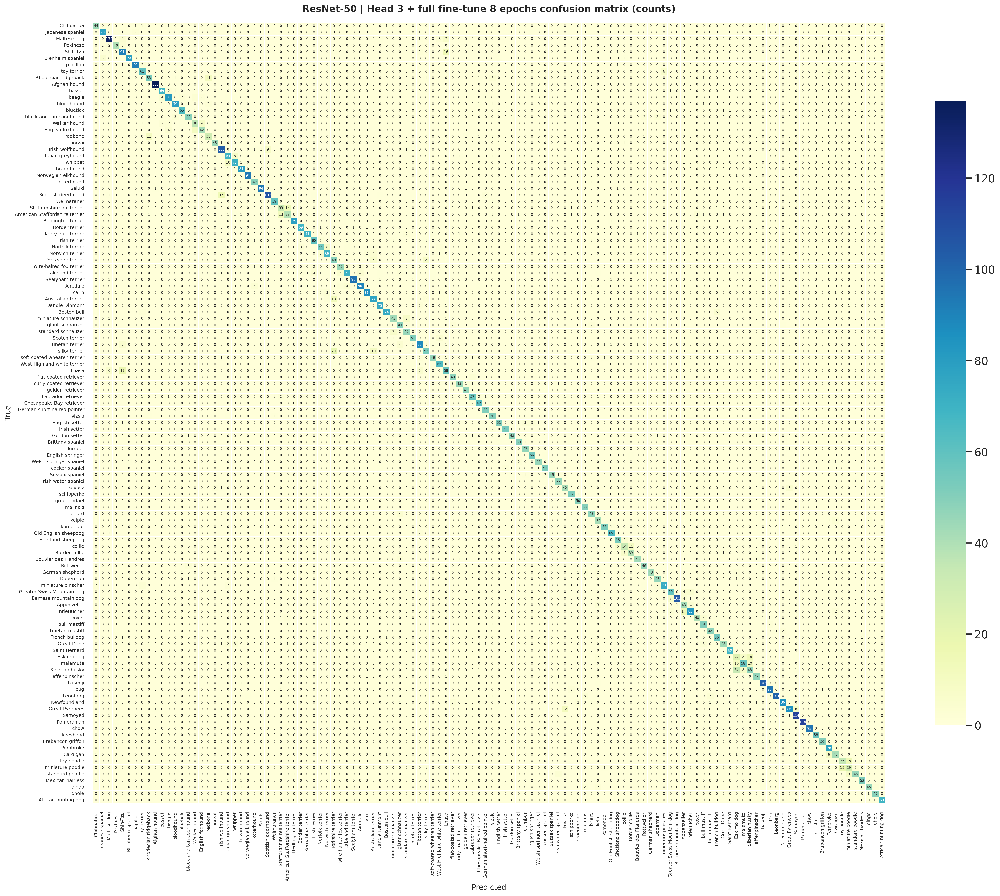
The staged ResNet-50 head exports this count-based confusion matrix directly from the same logits used to create
classification_report.csv and metrics.json.
The staged ViT-B/16 confusion matrix is the transformer counterpart to the CNN export and shows the cleaner top-1 prediction structure that follows from the stronger head outputs.
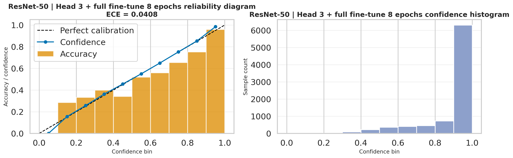
This calibration export reuses the probability vectors produced after softmax(dim=1), so it is a
direct visualization of how reliable the ResNet-50 head confidence is on the test set.
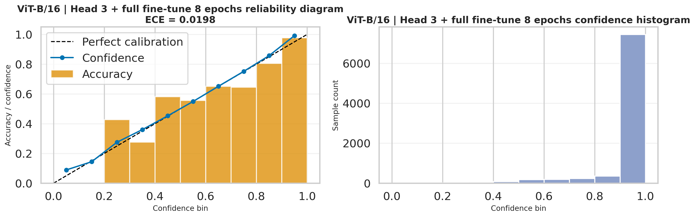
The ViT-B/16 calibration figure is also generated from the same head probabilities and complements the lower ECE
reported in the staged metrics.json.
Node 4 ends at head outputs and prediction mapping. Node 5 is where those exported files are interpreted as final benchmark results, diagnostics, and recommendations.
This stage interprets the final Stanford Dogs outputs at report level: the fair four-run benchmark, W&B-backed provenance, downloaded notebook diagnostics, and practical recommendations for choosing between the ResNet-50 and ViT-B/16 pipelines.
Quick summary
The current report now reflects the matched four-run benchmark exported by the rerun notebook: both ResNet-50 and
ViT-B/16 are evaluated under full fine-tuning for 12 epochs and
head 3 + full fine-tune 8 epochs. The summary below is grounded in
model_comparison.csv, best_per_family_comparison.csv, comparison_overview.png,
and the matching W&B export files.
Best accuracy / macro F1
The strongest overall run is ViT-B/16 with head 3 + full fine-tune 8 epochs at 93.48% test accuracy, 0.9311 macro F1, and 0.9350 weighted F1.
Best calibration
The lowest exported ECE is 0.0178, achieved by ViT-B/16 full fine-tuning for 12 epochs. It is not the most accurate run, but it is the most confidence-aligned one.
Best CNN / fastest rerun
The fastest exported benchmark is ResNet-50 with head 3 + full fine-tune 8 epochs at 205.03 seconds, while still delivering 86.55% accuracy and 0.8599 macro F1.
The exported comparison figure summarizes the matched benchmark directly from the notebook. It visually confirms
the same ranking shown in model_comparison.csv: staged ViT-B/16 first, then full ViT-B/16, then
staged ResNet-50, and finally full ResNet-50.
| Model | Strategy | Accuracy | Macro F1 | Weighted F1 | ECE | Train time (s) | Params (M) |
|---|---|---|---|---|---|---|---|
| ResNet-50 | Full fine-tuning for 12 epochs | 0.8557 | 0.8485 | 0.8562 | 0.0468 | 227.08 | 23.75 |
| ResNet-50 | Head 3 + full fine-tune 8 epochs | 0.8655 | 0.8599 | 0.8659 | 0.0408 | 205.03 | 23.75 |
| ViT-B/16 | Full fine-tuning for 12 epochs | 0.9077 | 0.9026 | 0.9080 | 0.0178 | 943.43 | 85.89 |
| ViT-B/16 | Head 3 + full fine-tune 8 epochs | 0.9348 | 0.9311 | 0.9350 | 0.0198 | 755.21 | 85.89 |
Preview of best_per_family_comparison.csv |
||||||
|---|---|---|---|---|---|---|
| Model | Family | Best strategy | Accuracy | Macro F1 | ECE | Train time (s) |
| ResNet-50 | CNN | Head 3 + full fine-tune 8 epochs | 0.8655 | 0.8599 | 0.0408 | 205.03 |
| ViT-B/16 | Transformer | Head 3 + full fine-tune 8 epochs | 0.9348 | 0.9311 | 0.0198 | 755.21 |
Result references:
model_comparison.csv,
best_per_family_comparison.csv,
comparison_overview.png,
and
runs_summary.csv.
Fair comparison
Schedule effect
Accuracy vs calibration
Benchmark provenance
The notebook writes comparison CSVs and summary figures, while W&B records the matching run IDs, strategies, and training seconds. This gives the report both clean presentation artifacts and exact experiment provenance.
Preview of runs_summary.csv |
||||||
|---|---|---|---|---|---|---|
| Run ID | Model | Family | Strategy | Batch size | Image size | Total params |
4vbmbqdj |
ResNet-50 | cnn |
Full fine-tuning for 12 epochs | 32 | 224 | 23,753,912 |
82qpkftg |
ResNet-50 | cnn |
Head 3 + full fine-tune 8 epochs | 32 | 224 | 23,753,912 |
qt797v8c |
ViT-B/16 | vit |
Full fine-tuning for 12 epochs | 32 | 224 | 85,890,936 |
kqlnnxbe |
ViT-B/16 | vit |
Head 3 + full fine-tune 8 epochs | 32 | 224 | 85,890,936 |
| Model | Full acc | Staged acc | Delta acc | Full macro F1 | Staged macro F1 | Full time (s) | Staged time (s) |
|---|---|---|---|---|---|---|---|
| ResNet-50 | 0.8557 | 0.8655 | +0.0098 | 0.8485 | 0.8599 | 227.08 | 205.03 |
| ViT-B/16 | 0.9077 | 0.9348 | +0.0272 | 0.9026 | 0.9311 | 943.43 | 755.21 |
| Model | Strategy | Run ID | Training seconds | Metadata file | W&B run |
|---|---|---|---|---|---|
| ResNet-50 | Full fine-tuning for 12 epochs | 4vbmbqdj |
227.08 | resnet50_full_run_metadata.json |
4vbmbqdj |
| ResNet-50 | Head 3 + full fine-tune 8 epochs | 82qpkftg |
205.03 | resnet50_staged_run_metadata.json |
82qpkftg |
| ViT-B/16 | Full fine-tuning for 12 epochs | qt797v8c |
943.43 | vit_b16_full_run_metadata.json |
qt797v8c |
| ViT-B/16 | Head 3 + full fine-tune 8 epochs | kqlnnxbe |
755.21 | vit_b16_staged_run_metadata.json |
kqlnnxbe |
comparison_df = pd.DataFrame([experiment_to_row(result) for result in benchmark_results])
comparison_df['Params(M)'] = comparison_df['Params'] / 1_000_000
comparison_df.to_csv(ARTIFACT_ROOT / 'model_comparison.csv', index=False)
best_per_family_df = pd.DataFrame([experiment_to_row(best_cnn_result), experiment_to_row(best_vit_result)])
best_per_family_df['Params(M)'] = best_per_family_df['Params'] / 1_000_000
best_per_family_df.to_csv(ARTIFACT_ROOT / 'best_per_family_comparison.csv', index=False)
plt.savefig(ARTIFACT_ROOT / 'comparison_overview.png', bbox_inches='tight')
Provenance files visualized in this panel:
runs_summary.csv,
resnet50_full_run_metadata.json,
resnet50_staged_run_metadata.json,
vit_b16_full_run_metadata.json,
and
vit_b16_staged_run_metadata.json.
Downloaded diagnostics
The most useful downloaded diagnostics come from the staged best-per-family runs:
benchmark/cnn/restnet50_head_then_full and
benchmark/vit/vit_b16_head_then_full. These folders contain the normalized confusion matrices,
misclassified galleries, and interpretability views used below.
The normalized ResNet-50 confusion matrix highlights which breeds remain systematically difficult even after the improved staged schedule.
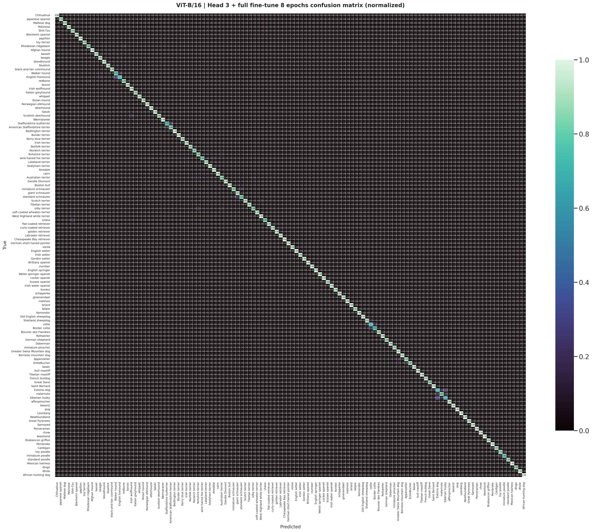
The staged ViT-B/16 normalized matrix is cleaner and more diagonal, matching the stronger benchmark accuracy and macro F1.
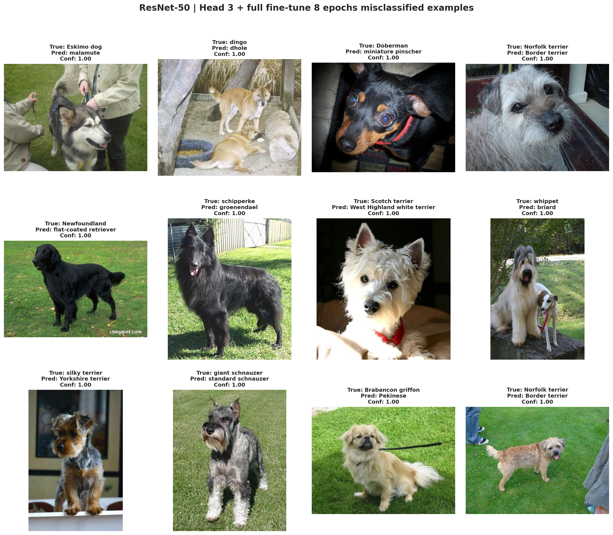
The ResNet-50 staged misclassified gallery is useful for discussing the hard visual cases that still survive after the better CNN training recipe.
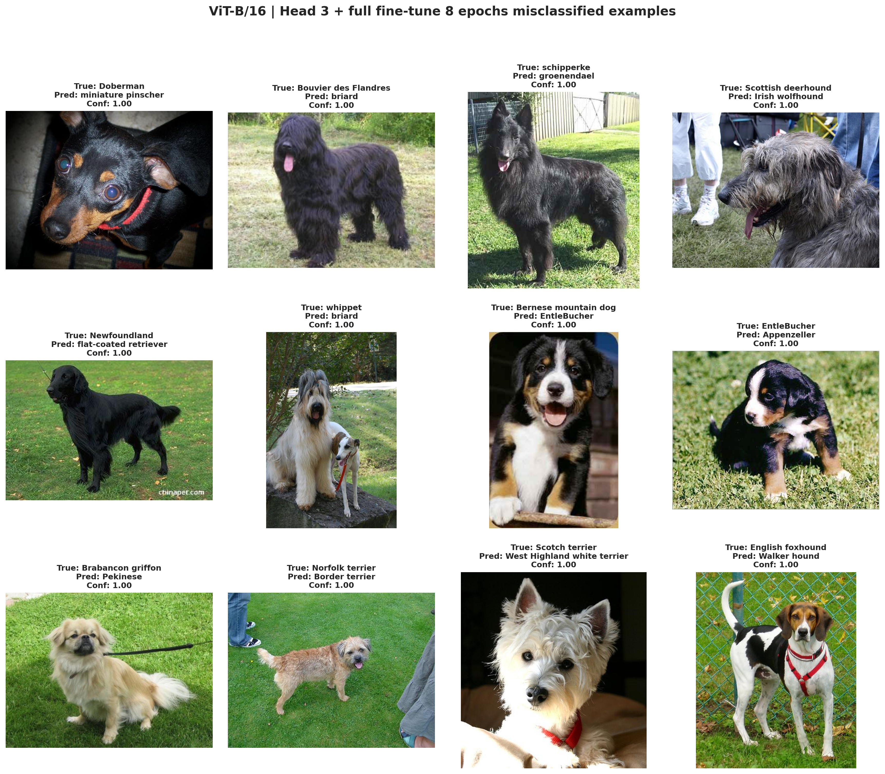
The staged ViT-B/16 gallery shows the smaller remaining set of hard examples after the strongest benchmark run has already filtered out most easier mistakes.
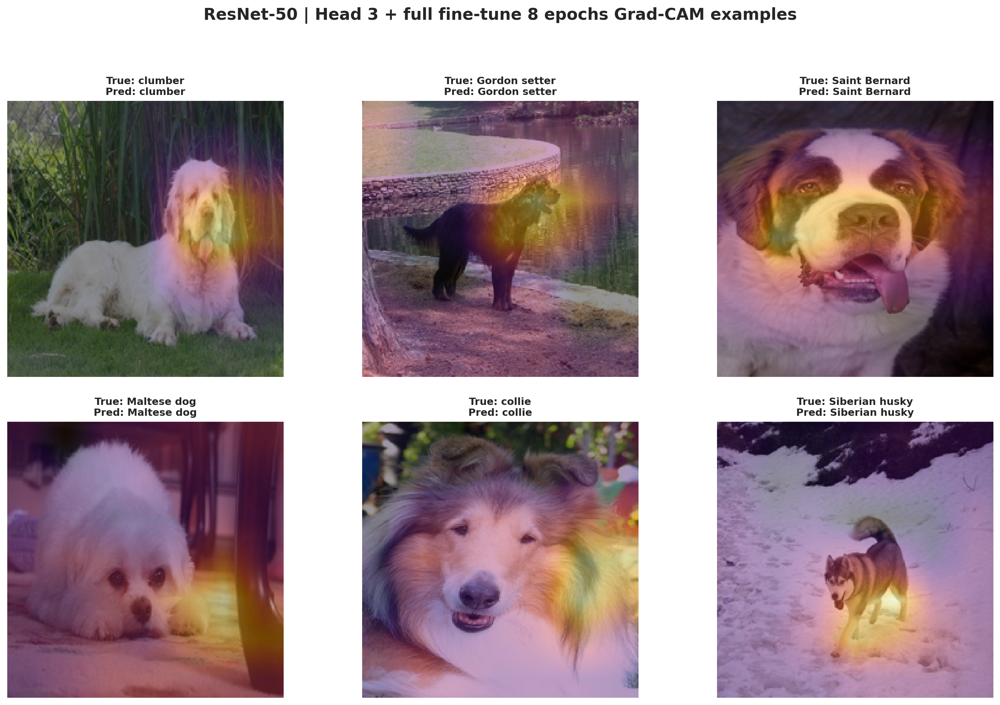
Grad-CAM for the staged ResNet-50 run shows which image regions the CNN relies on most strongly when making its breed predictions.
The three panels above are rendered directly from the staged CNN and ViT diagnostic PNG exports in the benchmark folders, so the web report is showing the same downloaded artifacts produced by the notebook rerun.
Recommendation
Choose ViT-B/16 with head 3 + full fine-tune 8 epochs. It is the strongest fair-benchmark configuration on both accuracy and macro F1.
Recommendation
Choose ResNet-50 with the staged schedule when you want the most practical benchmark rerun. It is much faster than either ViT run while still delivering a solid CNN baseline.
Recommendation
Choose ViT-B/16 full fine-tuning if your deployment cares more about probability quality than absolute top-1 accuracy. It has the lowest exported ECE among the four runs.